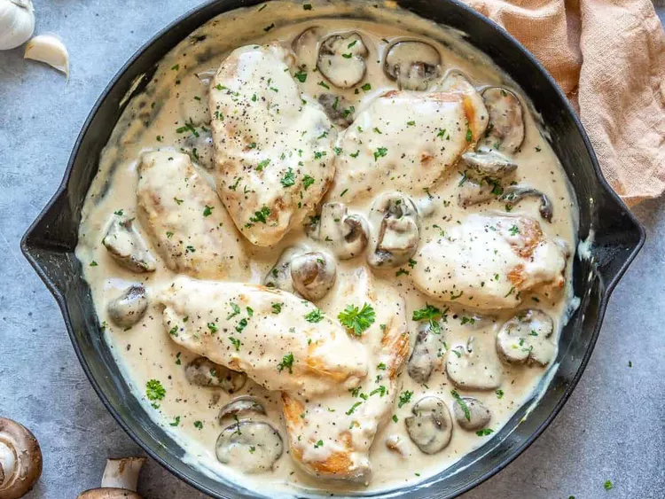

Easy, moist, flavour and romantic -- the white wine, artichokes and mushrooms make this chicken dish the to way to any man's heart! Delicous served with buttered noodles and fresh greens

Season chicken with salt and pepper. heat oil and butter in a large skillet over medium meat. Brown chicken in oil and butter for 5 to 7 minutes per side; remove from skillet, and set aside.
Place artichoke hearts and mushrooms in the skillet, and saute until mushrooms are brown and tender. Return chicken to skillet, and pour in reserved artichoke liquid and wine. Reduce heat to low, and simmer for about 10 to 15 minutes, until chicken is no longer pink and juices run clear.
Stir in capers, and simmer for another 5 minutes. Remove from heat; serve immediately.